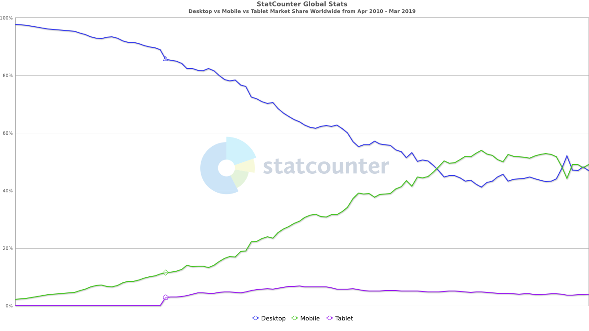
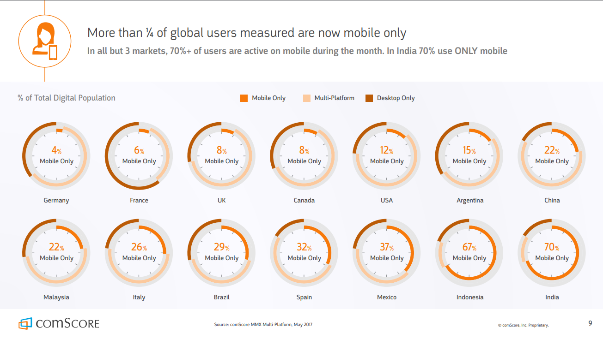
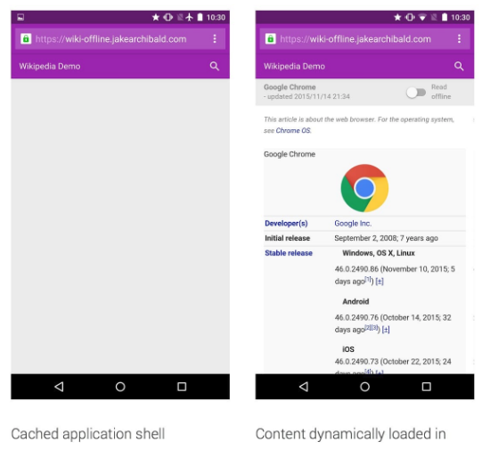
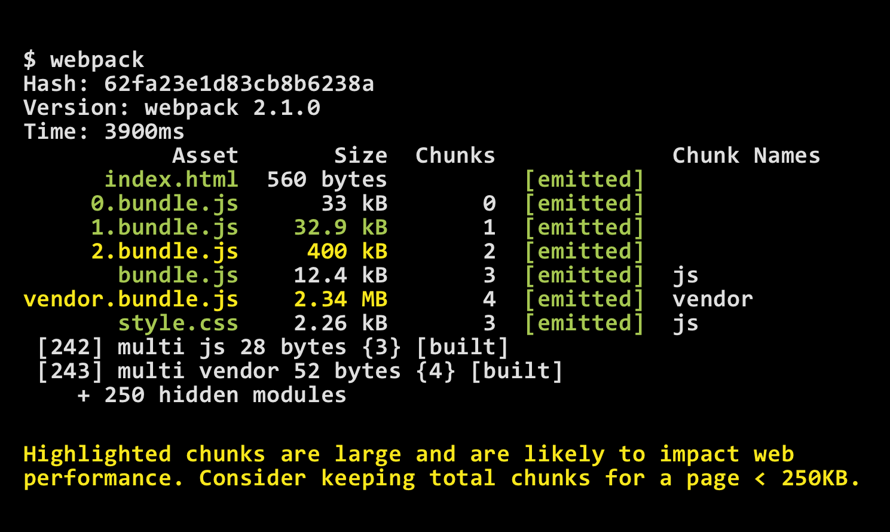

Adam Vaden
V2Tools.com
Progressive Web App (PWA)
What?
Why?
How?
</intro>
Ionic
- Progressive
- Responsive
- Connectivity Independent
- App-Like
- Fresh
- Discoverable
- Re-engageable
- Installable
- Linkable
BitSrc
- Reliable
- Fast
- Responsive
- Installable
- Splash Screen
- Highly engage-able
- Reliable
- Fast
- Engaging
- See Lighthouse
PWA
Progressive Web App
Progressive Web App
Progressive Web Experience
Progressive Web Experience
native-like
Alex Russell
Load Time
Most web apps take 15 - 16s to load
Mobile First
Mobile web continues to be increasingly important to reach users
Mobile > 50% usage in 2017
70% mobile active
12% + mobile only
~ 80% of time on mobile is spent in 3 apps
INDUSTRY SUPPORT ?
- Primary proponents
- Multiple talks per year at I/O
- Maintain the Lighthouse project
- Tons of resources to get you started
Apple
- First on the scene
- Part of Jobs vision for the iPhone
- Slowly integrated into iOS
Big Name Tech
BARRIER TO ENTRY
Why ?
- Reduced load time
- Mobile trending market
- Industry support
How to progressive web experience?
Choose what matters the most to you
Requirements
- Offline?
- Home screen presence
- Native Notifications
- Device integrations
Metrics
- Optimize Time to First Meaningful Paint (FMP)
- Time to Interactive
- Entry bundle size
- Maximum bundle size
- Cache efficiency
Service Worker
- Programmable network proxy
- Must be HTTPS
- Lifetime controlled by browser
- Good support - caniuse.com
Service Worker
if ('serviceWorker' in navigator) {
navigator
.serviceWorker
.register('/service-worker.js')
.then(function(registration) {
console.log('Registration successful, scope is:', registration.scope);
})
.catch(function(error) {
console.log('Service worker registration failed, error:', error);
});
}
Service Worker Lifecycle
- Installing
- Installed / Waiting
- Activating
- Activated
- Redundant
- Info
Service Worker
// events: 'install', 'activate', 'message', 'fetch', 'push', 'sync'
self.addEventListener('install', function(event) {
// postMessage() telling application that new version of service worker is
// available
});
self.addEventListener('activate', function(event) {
// Prepare environment for service worker, clean old caches,
// prefetch new resources, warm stale caches
});
self.addEventListener('fetch', function(event) {
if (event.url.contains('meaning-of-life')) {
event.respondWith(new Response('42'));
} else {
event.respondWith(new Response('Try googling it'));
}
});
App Shell Architecture
- Load fast
- Use as little data as possible
- Use static assets from a local cache
- Separate content from navigation
- Retrieve and display page-specific content
- Optionally, cache dynamic content
App Shell Example
PRPL Pattern
- Push
- Render
- Pre-cache
- Lazy-load
GUESS.JS
AI for content perfecting.
HTTP/2
http2demo.ioCDN


Workbox
Caching made easy
WebPack plugin for precaching
Workbox
- core
- precaching
- routing
- strategies
- expiration
- backgroundSync
- googleAnalytics
- cacheableResponse
- broadcastUpdate
- rangeRequest
- Streams
- navigationPreload
Progressive jpeg
Standard
Progressive
Code Splitting
- Route level
- index.js / vendor
Webpack Performance Metrics
Webpack Performance Metrics
module.exports = {
performance: {
hints: 'warning',
// How large can index.js be (bytes)
maxEntrypointSize: 400000,
// How large can any single asset be (bytes)
maxAssetSize: 100000,
// Do analysis only only specified files
assetFilter: function(assetFilename) {
return assetFilename.endsWith('.js') ||
assetFilename.endsWith('.jsx') ||
assetFilename.endsWith('.vue');
}
}
};
Webpack Bundle Analyzer

Add to home screen
- Engagement heuristic
- Web app manifest
- HTTPS
- Service Worker
Microsoft Store
- Automatic index by Bing
- Manual submission